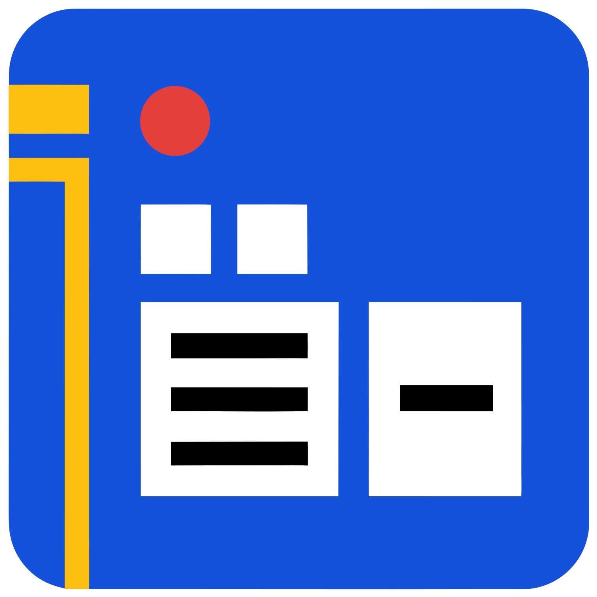

A retro desk for your Bitbucket pull requests, with Claude Code running next to the diff.
PRESS START
f) so the diff gets the room.pixeldeck.py --propose instead of opening a pull request itself, then waits. A notification shows the branch, its target, its size and whether the branch closes after the merge. Proceed opens it as proposed; Review opens the popup with the target branch, the close-branch box and the diff; Decline says no. The command exits 0 with the link, 2 when declined, 3 while still waiting (run it again: same proposal), 4 when PixelDeck is not running.? replays them.git clone https://github.com/ahmedloumx/pixeldeck.git
cd pixeldeck
cp .env.example .env # Windows: copy .env.example .envSet BITBUCKET_EMAIL, BITBUCKET_TOKEN, BITBUCKET_WORKSPACE, and PIXELDECK_WORKSPACE_ROOT (the folder with your clones). Create the token at id.atlassian.com with Bitbucket read access to your user, the workspace, repositories and pull requests, plus pull request write if you want to open, merge and decline pull requests from PixelDeck. It never needs admin or delete scopes.
| System | Start | Stop | Extras |
|---|---|---|---|
| Linux | python3 pixeldeck.py or ./run.sh | python3 pixeldeck.py --stop | ./install-desktop.sh adds it to the app grid and the GNOME dock. For its own window: PyGObject, GTK 4 and WebKitGTK 6 (Fedora: webkitgtk6.0). |
| macOS | double-click PixelDeck.command, or python3 pixeldeck.py | python3 pixeldeck.py --stop | Chrome, Edge or Brave gives it an app window; otherwise it opens in your default browser. |
| Windows | double-click PixelDeck.cmd, or py pixeldeck.py | py pixeldeck.py --stop | py -m pip install pywinpty for the terminal panel. Edge, built in, gives it an app window. |
--status says whether the server runs. --server runs it in the console, for debugging.
Every setting is in one .env next to pixeldeck.py; .env.example lists them all with comments. A value in the real environment wins over the file. The file is re-read when it changes, so a new token works without a restart. .gitignore keeps .env out of git.
| Key | What it is |
|---|---|
BITBUCKET_EMAIL, BITBUCKET_TOKEN | Your Atlassian account email and API token. Required. |
BITBUCKET_WORKSPACE | The workspace slug, as in bitbucket.org/<workspace>/<repo>. Required. |
BITBUCKET_PROJECT | Start scoped to one project key. Empty: every project. You can switch in the app. |
JIRA_SITE, TICKET_PREFIXES | Turn ticket keys such as ABC-123 in branches and titles into Jira links. With no prefixes, any key that looks like one counts, so set them when you can. |
PIXELDECK_WORKSPACE_ROOT | The folder with your local clones: for pushed branches, worktrees and the terminal's start folder. Default: the folder PixelDeck sits in. |
PIXELDECK_RELEASE_REPOS | Glob patterns of repos whose pull requests target master or main before develop. |
PIXELDECK_BRIEFS_DIR | A folder of your own Claude brief templates (see Terminal and Claude). |
PIXELDECK_CLAUDE | Path to the claude CLI when it is not on PATH. |
PIXELDECK_BROWSER | A command for Bitbucket and Jira links, such as firefox --new-tab. Default: the system browser. |
PIXELDECK_PORT | The local port. Default 8642. |
PIXELDECK_CACHE_DIR, _STATE_DIR, _DATA_DIR, _CONFIG_DIR, PIXELDECK_SETTINGS_FILE | Where PixelDeck keeps things. Defaults follow each system: ~/.cache and ~/.local on Linux, ~/Library on macOS, %LOCALAPPDATA% and %APPDATA% on Windows. |
pixeldeck.py starts the server if it is not already up, then opens the window. Closing the window leaves the server, its cache and its terminals alive, so the next open is instant.
| Layer | What | Why |
|---|---|---|
| Window | Linux: Python with PyGObject, GTK 4 and WebKitGTK 6 (app_window.py). Elsewhere: a Chromium-family browser in --app mode with a profile of its own, else the default browser. | A real app window with its own dock icon and no browser bars, using the web engine the system already has: nothing bundled. Electron would ship a whole Chromium for the same result. |
| Server | Python standard library: http.server, urllib, json, pty, subprocess, threading. | Nothing to install or upgrade. It idles at 0% CPU, so the language is not the cost. |
| Terminal | Linux and macOS: pty. Windows: ConPTY through pywinpty. In the page: xterm.js 5.5.0 with its fit, WebGL and Unicode 11 add-ons. | xterm.js is the open source terminal VS Code uses. WebGL draws it on the GPU for smooth scrolling and fast output, and falls back to the plain renderer if the GPU context is lost; Unicode 11 gets emoji and symbol widths right. |
| Data | Bitbucket Cloud REST 2.0 with an Atlassian API token (Basic auth with your email), read from .env. | A rolling counter keeps it under the 1,000 calls an hour limit. |
| Storage | One JSON cache (mode 600, atomic writes), a settings file, a state folder, and the window profile, in each system's own folders. | One person's data fits in one file; no database to run. |
| Page | Plain HTML, CSS and JavaScript: app.js, layout.js, term.js, visuals.js, sprites.js. | No build step: edit a file, reload. |
| Look | Press Start 2P, Pixelify Sans and Host Grotesk (local woff2, 44 KB); pixel sprites drawn as SVG from small letter grids. | Everything is local: it works offline and loads no CDN. |
| Tests | unittest (43 tests, including sync against real git repositories and the propose command against the real server, including import tests that pretend to be Windows and macOS), a WebKit self-test mode, browser scripts. | The self-test runs headless, so checks never pop a window. |
prdesk.term.renderer to dom and reload.drops/, files readable only by you, cleared after a week, 50 MB at most) and that copy's path is pasted.worktrees/pr/<repo>-<id> (or reuse the clone already on that branch), and start claude in a terminal. Shift-click opens your system's own terminal instead.briefs/head.md plus summarize.md, review.md, fix.md or fix_push.md. Copy any of them to a folder, add your house rules (a review rubric, commit conventions) and set PIXELDECK_BRIEFS_DIR. Placeholders such as {source}, {dest}, {cwd} and {ticket} are filled in; the threads follow the template.claude starts cleanly..env, anyway. Approval is refused if the branch moved since it was proposed..env and sent only to api.bitbucket.org. Give it read access plus pull request write; never admin or delete scopes. Branch deletion and Claude's pushes use your own git credentials.Fix and push tells Claude to push with --force-with-lease on the exact remote commit, never a blind force. That is an instruction to Claude, not a check PixelDeck enforces.
Measured on Linux (Fedora, Python 3.14, WebKitGTK 2.54). Memory is PSS from /proc/<pid>/smaps_rollup, summed over each process tree, so shared libraries are split fairly. Each window loaded the same page, settled for 25 s, then CPU was sampled for 15 s, under Xvfb with software rendering: on a real desktop the GPU path shifts the numbers, the ranking holds.
| Process | Memory | Idle CPU | Notes | |
|---|---|---|---|---|
| Server | 95 MB | 0.0% | Python itself is about 14 MB and the cache held as objects about 22 MB. | |
| Linux app window | 336 MB | 3.0% | Web content 170 MB, GTK 145 MB, network 20 MB. | |
| Chrome app mode | 370 MB | 5.0% | 13 processes, with a profile of its own. | |
| Firefox, fresh instance | 797 MB | 39.9% | 14 processes, measured while a new profile was still starting up. |
| Files the page loads | 758 KB |
| xterm (script, 3 add-ons, styles) | 409 KB |
| Our JavaScript (5 files) | 191 KB |
| Fonts (3 woff2) | 44 KB |
| DOM ready / loaded (before the title screen was added) | 46 to 58 / 165 to 177 ms |
| Redraw: queue / merge tree | 1 / 14 to 24 ms |
The title screen holds the page for at least 1.3 s by design; any key skips it.
| Call | Time | Size |
|---|---|---|
| bootstrap | 5 ms | 3 KB |
| your pull requests | 13 ms | 1.25 MB |
| a team of 9 | 50 ms | 6.7 MB |
| pull request detail | 0.8 ms | 3.5 KB |
| a 19-file diff | 1.5 ms | 144 KB |
A detail not cached yet took 1.5 s: that is Bitbucket, not the server.
| Part | Linux | macOS | Windows |
|---|---|---|---|
| Server, queue, pull requests, actions | tested | written, import-tested | written, import-tested |
| Window | own GTK window and Chrome app mode, tested | Chrome, Edge or Brave app mode (the code path tested on Linux) | Edge app mode (the code path tested on Linux) |
| Terminal panel | pty, tested | pty (same code as Linux) | ConPTY via pywinpty |
| Shift-click terminal | Ptyxis, tested; GNOME Terminal, Konsole, Xfce written | Terminal.app | Windows Terminal, else cmd |
| Launcher | run.sh, app grid, dock | PixelDeck.command | PixelDeck.cmd |
| Folders | XDG | ~/Library | %APPDATA%, %LOCALAPPDATA% |
"Import-tested" means a test loads every module while pretending to be that system (with the Unix-only modules blocked for Windows) and checks the folders, the terminal backend and the shell it picks. The macOS and Windows paths have not yet run on a real Mac or Windows machine.
| File | Lines | Role |
|---|---|---|
pixeldeck.py | 253 | Start, stop, status; picks the best window for the system; --propose for agents. |
proposals.py | 132 | Pull requests an agent asks to open, waiting for your answer. |
config.py | 167 | The .env, and each system's folders. |
server.py | 535 | Routes, Host and token checks, CSP, the terminal stream, file drops. |
engine.py | 507 | Cache, refresh loop, merged and declined windows, project scope. |
model.py | 298 | Pull requests, reviews, threads, timelines, parsed diffs, ticket keys. |
app_window.py | 263 | The Linux window: WebKit view, pop-outs, links to the browser, self-test. |
terminals.py | 242 | Terminal sessions: pty on Linux and macOS, ConPTY on Windows. |
launcher.py | 232 | Claude brief from templates, worktree, launch. |
bitbucket.py | 194 | REST client, paging, the hourly call counter. |
actions.py | 342 | Open, sync, merge and decline a pull request; delete a pushed branch. |
gitscan.py, opener.py, check_api.py | 261 | Branches pushed without a pull request; opening links; an API shape check. |
briefs/ | 62 | The default Claude brief templates. |
static/ scripts | 3,461 | app.js (queue, pull request view, Markdown, copy, title screen), layout.js (panels), sprites.js (pixel characters), term.js (terminal tabs), visuals.js (merge tree, age bars). |
static/ styles | 1,258 | Tokens, base, app, workspace, arcade. |
run.sh, install-desktop.sh, PixelDeck.command, PixelDeck.cmd | 65 | Launchers for each system; the Linux app grid and dock entry. |
tests/test_desk.py | 756 | 43 tests. |